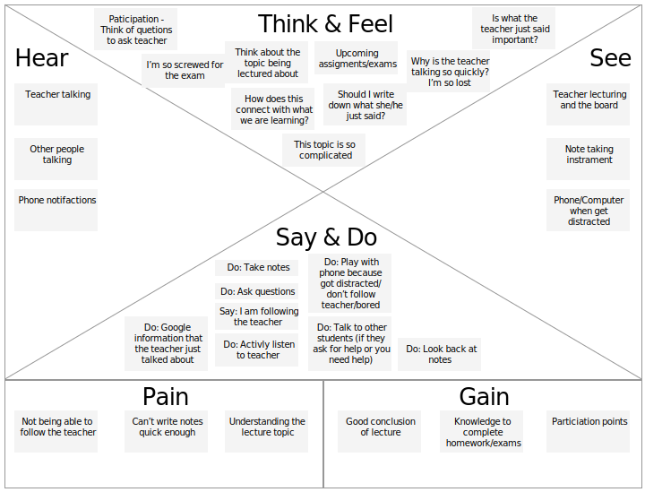
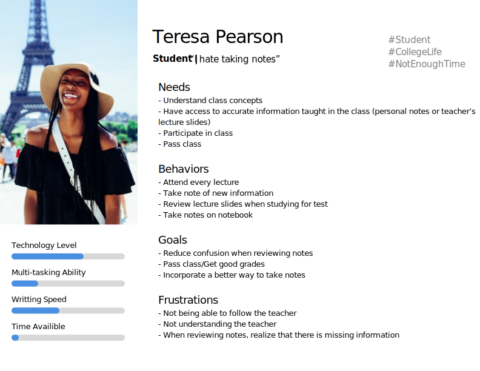
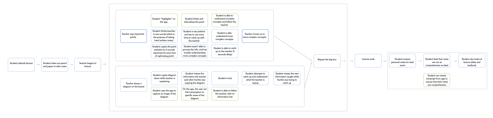
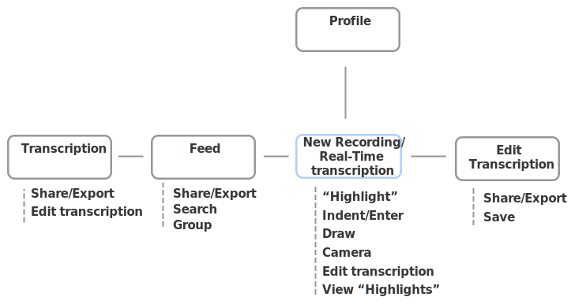
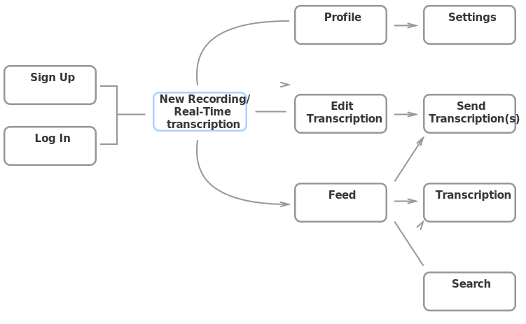
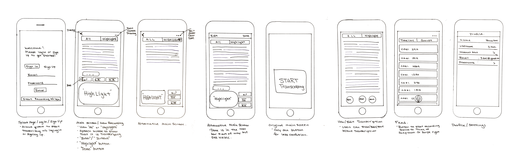
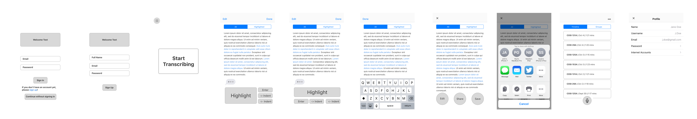

ēnk began when I noticed how “normal” it was to fall behind or not fully comprehend lecture topics as I was attending the lecture.
OBJECTIVE
The goal was to design a product that can help students comprehend lecture information better.
RESULT
ēnk is a service which allows users to pay full attention to understanding what the professor is lecturing about by simplifying the note-taking process.
APPROACH
ēnk was created as part of my capstone project for my Springboard UX course. From interviews to prototyping, ēnk has gone through the entire UX design process.
DURATION
2 months. September to October
MY ROLE
Conduct user research, wireframe, mockup, prototype,
The Problem
For students, lecture attendance is only beneficial only if he/she is able to absorb the information as it is being taught. However, I noticed that for faster-paced classes, I tend to fall behind and not fully comprehend the topic even while being taught the information. The process of taking notes slows me down to the point that I am unable to write and process the information as fast as the professor is lecturing it. Note taking during lectures is undoubtedly a great tool for learning. However, should it be at the expense of comprehension?
UX PROCESS
Questionnaire Summary
I first conducted a questionnaire to find out a design problem students face when attending lectures. There were several important conclusions that were found from the survey. Users expressed their desire to take as little notes as possible as long as they have an account of the important information mentioned in the class. Some of the survey participants reported writing speed as something they want to improve on, as their current writing speed interferes with their ability to follow along with the teacher.
Attending lectures is very simple. The idea is that you are there to absorb information and ask questions. Note taking is technically not a fundamental part of attending lectures but people take notes because they want to retain their knowledge and have materials to study from later. If an application exists to help students take notes, then they can concentrate all their attention to listening to the teacher and processing the information.
Interview Summary
The questionnaire provided me the basis of a design problem that existed in a classroom setting. The process of note taking being a major factor of student's tendency of falling behind and not comprehending the full lecture. With the problem space being so general, I conducted 5 interviews with selected participants of the questionnaire to understand their current behaviors, needs, and goals.
The interviews proved that students are concerned with their comprehension of lectured topics and everyone has slightly different methods of tackling the same problem. There were students who took no notes at all to students who wrote down every word the professor said. It was clear that the they all wanted a system that allows them to have comprehensive notes and have enough time to comprehend the lectured topics. With so many systems already existing to help students take notes (Pencil and paper, OneNote, EverNote, Lecture recordings...), it seemed unlikely that none were able to satisfy students's need. However, it turns out that each of the solutions were great in their own way. Students could either have comprehensive notes or have a great understanding of the topic using the solution. There was no system that could give students both of the benefits.
Competitive Analysis
The competitive analysis looks at the three most popular note taking methods. Although each method excelled in certain areas, there were areas in which they also lacked in. I analyzed each one to understand what works and what does not.
OneNote
Lecture Recordings
Pen and Paper
Organize documents like a notebook
Drawing mode
Recording Mode. Maps text to audio recordings
Tags/Icons for easy processing of text
Limited formating options for organization
(-) Format for easy printing
Having a record of the audio allows user to focus on prof. during lecture
(-) Users must go through entire recording to get info
(-) Recordings may be hard to hear
Easily to change from writing to drawing mode
(-) Easy to edit
(-) Easy access to documents anytime/anywhere
This process helped me understand the competition. And by taking the time to analyze each of them, I have a better understanding of the reasons why a user would prefer one over the other. Therefore, I can create a platform that integrates the best qualities of each method.
Empathy Map

Persona

Scenario/Storyboard

×
MVP and User Stories
At this stage, I have a comprehensive understanding of the design problem. The next step is to design MVP features that support user stories.
Information Architecture
If you boil it down, ēnk is essentially a transcription application that allows users to manipulate the incoming data. The application is very simple and all additional features are built on top of the transcription function. As a result, the information architecture of ēnk draws a lot of inspiration from the IA of Snapchat.

User Flow

Wire Frame
(Hover and scroll to zoom!)

×
Medium Fideltiy Mockup

×
When designing the low fidelity wireframes of ēnk, much of the design decisions were made based on the user stories and MVP features list previously created. I created the wireframe with pencil and paper, drawing very rough sketches of the screens to organize the layout of the individual elements of the screens. During the process, I encountered a lot of difficulties structuring the transcription screen. There were many functions I wanted to implement in easily reachable areas, however, I had to keep in mind that ideally users would benefit most from looking at the screen as little as possible. Therefore, the screen has to be structured in a way that minimizes accidental clicking. I created multiple variations but was still not sure of which had the most optimal positioning for the buttons.
After presenting the prototype to potential users, I received several suggestions regarding the organization of the transcription screen. It was suggested that I consider displaying the secondary buttons (“enter”/”indent”) below the “Highlight” button. I believe this suggestion lays out the buttons in a way that is the most natural for the user. With the secondary buttons below the “Highlight” button, the chances of accidental tapping is lowered.
Style Guide
Mobile Application User Testing
The overall user testing was very smooth and the assigned tasks were completed without much hesitation. Users seemed comfortable navigating through the application. However, there was some confusion caused by the limitations of the prototype. Some users were confused with the real-time transcription data. They were not sure how the transcriptions would be displayed in real time; and as a result, how to interact with the text. However, with a higher fidelity prototype (not just lo-fi prototype), the confusion will be dismissed.
The users that tested the application were all students. Males and females with ages ranging from 18-25. They were medium to heavy smartphone users. The testers all had different note-taking and studying strategies so observing that they are able to navigate the application smoothly was a good reassurance of the IA and UI of the application. However, in real lecture situations, users are expected to interact with the app without looking at the screen much. i.e. the user would focus all of his/her attention on the teacher and position a finger over the “highlight” button. So when an important statement has been made, the user can click the button they are hovered over to “highlight”. This is all done without looking at the smartphone. Therefore, users also were asked to interact with the application in a similar situation to real life lecture situations. Users found that the large “highlight” button and the positioning of the extra functions (enter/indent) made it easy to interact without looking. However, many suggested to only show the extra functions when looking at the highlighted text. The reason being that there is no visual feedback when these buttons are clicked if the user is looking at the entire transcription.
From observing the users, I will further iterate on the transcription screen. The amount of functions necessary on the screen requires more iterations in order to figure out the optimal positioning of the elements.
Prior to this project, when I had an idea for an application, I would begin with a high-fi prototype, however, I have now learned that a very vital element was the process of understanding what users needed and creating the MVP features list. That documentation really helped to figure out what and why elements should be added to a screen. In addition, designing the lo-fi prototype helped me prioritize the accessibility of each screen instead of focusing on the aesthetics. A part of the UX design process that I used to struggle with was user testing. Initially, I was very defensive with my designs and would consider suggestions as personal attacks. However, that mentality changed throughout this project because I was considering the user during the entire process. Therefore, when a suggestion was brought up, I was more likely implement it because I approached it from the user’s perspective with the knowledge I acquired from doing the user interviews, empathy map, and personas. Incorporating user feedback into my process helped me create a better application than what it would have been otherwise.